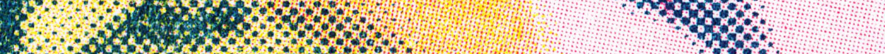
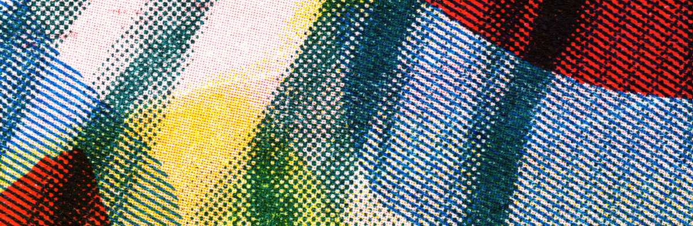
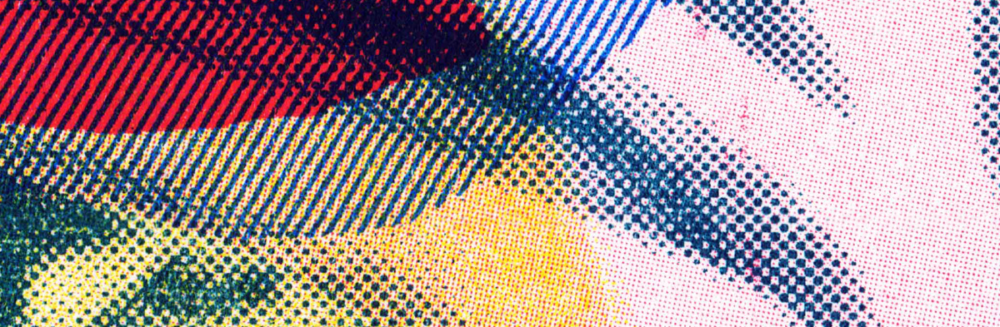

OFF THE PRESS
IMPRIMERIE RISO
Vous pouvez imprimer quasiment ce que vous voulez en RISOGRAPHIE (il y a des limites).
L'atelier dispose de 10 couleurs et de différentes sortes de papier. Installé à la pointe de l'île d'Oléron
nous vous acceuillons avec plaisir ! Sachez que nous sommes joingnable par courrier electronique ou téléphone.
Comment nous trouver ?

WHAT IS RISOGRAPHY ?
Créé au Japon en 1946, la risographie est une méthode d'impression fusionnant
la sérigraphie et l'impression offset. L’encre est appliqué à froid à travers
un pochoir (écran maître) fabriqué par la machine à partir d’une image numérisée.
Elle produit des œuvres aux teintes vives et aux textures variées. Elle se révèle économique Pour les tirages moyens,
en offrant une qualité similaire à l'offset. Cependant, elle partage aussi des caractéristiques de la sérigraphie,
comme des imperfections charmantes telles que des variations subtiles dans l'application d'encre.
Grâce à des couleurs vibrantes et un effet granuleux, les impressions risographiques
se démarquent par leur esthétique distincte et recherchée. Les artistes exploitent
souvent ces traits pour créer des œuvres impossibles à obtenir autrement.
La risographie est un procédé écologique, utilisant des encres à base de soja,
consomant peu d’energie et produisant peu de déchets. Le papier imprimé n’est pas
couché, sans plastique.
En somme, la risographie, en mariant les atouts de la sérigraphie et de l'offset,
propose des résultats visuellement attrayants, uniques et abordables. Son utilisation
croissante dans l'art et l'édition découle de sa capacité à générer des impressions
mémorables et marquantes.

spécifications techniques
- _Format papier > max:A3 / min:A6
- _Zone d'impression > 287mm * 410mm MAX
- _Fichiers > enregistrés
au format PDF, TIFF ou JPG en NIVEAU DE GRIS + nommés avec leur couleur d'impression.
La risographie ne permet pas d'imprimer de grandes
surfaces avec un encrage trop important, réduisez vos aplats à 95% max,
notamment sur la zone de la roulette. Pour plus de détails contactez nous > nil@nl-pk.com
PRINT WITH US !
Pour imprimer RISO avec Off The Press,
c'est très simple ! Demandez un devis ou des conseils : nil@nl-pk.com

Couleurs disponible
SARCELLE
BLEU
VERT
BLEU FRANC
ROUGE VIF
VIOLET
JAUNE
ROSE FLUO.
ORANGE FLUO.
SARCELLE
NOIRE
PAPIER
Nous travaillons principalement avec la gamme Munken.
Le papier utilisé doit être non couché (exempte de tout plastiques)
de format A3 maximum.
MUNKEN PURE
Papier d'édition crème (62 CIE) FSC® PEFC™EVERCOPY+
Papier 100% recyclé, non blanchi (95CIE)AUTOCOLLANT
Papier non plastifié (EUROPE) A4
| FEUILLE A3 |
PRIX |
| MUNKEN PURE 90gsm |
0.11 |
| MUNKEN PURE 150gsm |
0.18 |
| MUNKEN PURE 240gsm |
0.28 |
| EVERCOPY+ 90gsm /recyclé gris |
0.05 |
| PAPIER AUTOCOLLANT A4 90gsm |
0.15 |